Apitox sakupljač je proglašen najboljom inovacijom na državnom sajmu pčelarstva.
Otkako je počeo da gaji pčele, Goran Stanojević nikada nije pčelario samo „na med“. Na samom početku shvatio je da isplativost pčelarenja zavisi i od sakupljanja polena i propolisa, pravljenja rojeva za tržište… Ako tome dodamo sve lošije i neizvesnije pašne prilike iz godine u godinu, ovakav način razmišljanja dobija na značaju.

I kod sakupljanja pčelinjeg otrova Goran je razmišljao drugačije od ostalih pčelara. Mnogi su ga pitali kako može da računa na siguran plasman pčelinjeg otrova ako u našoj državi ne postoji zakonska regulativa vezana za ovaj proizvod, a samim tim ni organizovan otkup, niti tržište za pčelinji otrov. Njegov odgovor bio je da je ključna promena našeg načina razmišljanja o tržištu uopšte – da se moramo ugledati na to kako funkcioniše zapadno tržište, odnosno da sa gotovim proizvodom krenemo u potragu za kupcem.
To ima smisla, jer se pčelinji otrov uz adekvatno čuvanje može skladištiti i nekoliko godina, a da ne izgubi na kvalitetu. Verujemo da će se, uz naše angažovanje, nešto promeniti i kod nas.
Princip rada elektrostimulatora svodi se na proizvodnju pulsirajućeg električnog signala određene frekvencije i amplitude (frekvencija impulsa 50–1000 Hz, napon 11–42 V), grupisanog u klastere određenog trajanja (impuls 2–3 sekunde), između kojih je pauza bez signala (3–6 sekundi). Promenu ovih parametara omogućavaju mikročipovi na ploči elektrostimulatora.
Kolektorski okvir se u većini konstrukcija postavlja izvan košnice – na leto – i može biti različitih veličina. Pčele prilikom sletanja na ploču dodiruju žičanu mrežu i zatvaraju strujni krug, pa dolazi do elektrostimulacije. Tada savijaju zadak prema ploči i pri dodiru žaoke sa pločom ispuštaju otrov na nju.
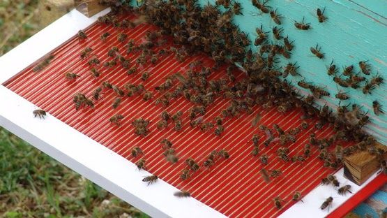
U svim sferama ljudske delatnosti tehnologija svakim danom postaje sve razvijenija i složenija, pa tako i tehnologija dobijanja pčelinjeg otrova. Osnovni princip, međutim, ostao je isti: pčelinji otrov dobijamo elektrostimulacijom, odnosno blagim elektrošokovima. To nije jedini način dobijanja otrova od pčela, ali je daleko efikasniji i jednostavniji od ostalih. Takođe, sa aspekta očuvanja zdravlja, kvaliteta i kvantiteta pčelinje zajednice, ovaj način je najmanje štetan, gotovo bezopasan. Podrazumeva se da se i prilikom sakupljanja pčelinjeg otrova moramo pridržavati pravila dobre pčelarske prakse – tada negativnih posledica po pčelinja društva i pčele kao jedinke sigurno neće biti.
Na tržištu se trenutno mogu pronaći uređaji koje serijski proizvode pojedinci, uglavnom pčelari, ili uređaji kineske proizvodnje. Na prvi pogled svi su slični i ponavljaju sličan patent uveden sredinom sedamdesetih godina prošlog veka. Većina se sastoji od izvora struje (akumulator ili baterija), elektrostimulatora (regulacija struje, napona, frekvencije…) i kolektorskih okvira (sa žičanom mrežom i staklenim pločama).

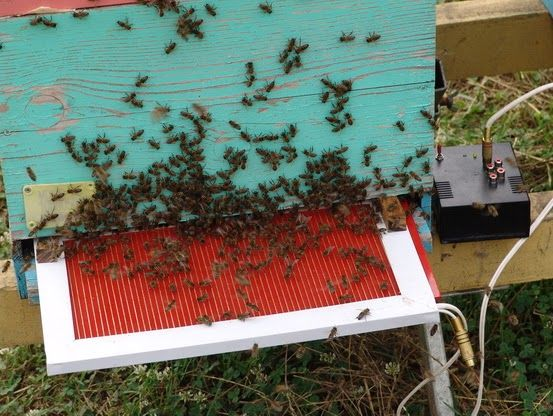
Važno je napomenuti da, pored različitog dizajna, sakupljači pčelinjeg otrova imaju i velike razlike u elektronskim parametrima. Najveća razlika je u sistemu upravljanja (ručni ili automatski), u kontroli frekvencije i amplitude izlaznog signala, kao i u dužini rada uređaja. Razlike postoje i u pomoćnim elementima – svetlosnim i zvučnim indikatorima rada i pojedinih faza rada uređaja.
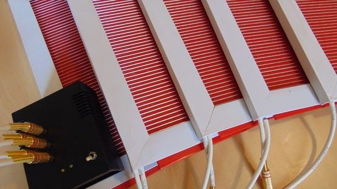
Mnogo vremena i truda bilo je potrebno da Goran izradi sopstveni uređaj za sakupljanje pčelinjeg otrova. Pomogla su mu saznanja sa interneta i iz literature, kao i poznavanje elektronike, koja mu je struka. Ideja vodilja bila je doći do optimalnih elektronskih parametara, a to je bilo moguće samo izradom više modela i testiranjem svakog od njih. Posle mnogo proba i neuspeha, Goran je 2013. godine došao do uređaja koji vam predstavljamo, a koji je danas usavršen i nadograđen iskustvom.
Uređaj radi na baterije napona 4,5 V, smeštene u kućištu elektrostimulatora, što je svakako praktičnije od automobilskog akumulatora. Mnogo dana provedenih u radionici i na pčelinjaku iznedrilo je najbolje rešenje: elektronske komponente ugrađene u elektrostimulator omogućavaju rad sa naizmeničnim naponom od 23 V do 30 V i frekvencijom oscilatora 700–1000 Hz, pri čemu impuls traje 3 sekunde, a pauza isto toliko. Ove karakteristike su se u praksi pokazale kao najbolje.
Što se tiče žica na kolektorskoj ploči, nije bilo dileme. Već nakon prvih testiranja odbačena je inoks žica, jer je bolje rezultate pokazala posrebrena žica – ona je bolji provodnik, otporna je na hemijsko dejstvo otrova, a srebro ima i antiseptička svojstva (manja verovatnoća prenošenja bolesti na pčelinjaku). Razmak između žica na kolektorskoj ploči iznosi 4,2 mm, što se kroz testiranja pokazalo kao najbolje.
Debljina stakla na kolektorskoj ploči je 3 mm, a staklo je sa donje strane presvučeno folijom u boji, da bi otrov bio lakše uočljiv prilikom struganja.
Sa sakupljanjem pčelinjeg otrova počinjemo u drugoj polovini aprila, ili čak malo ranije, ali samo ako su zajednice dovoljno jake – ako imaju 6 ramova legla u DB košnicama, odnosno 8 ramova legla u LR.
Sve počinje postavljanjem kolektorskih ploča na poletaljke košnica. Ploča je debela 15 mm i duga 360 mm, što omogućava vađenje regulatora leta i postavljanje kolektorske ploče na njegovo mesto (sa bočnih strana fiksira se drvenim konusnim klinovima). Na podnjačama gde je regulator leta fiksiran, ploče se postavljaju uz pomoć plastičnih štipaljki. Razlika između unutrašnje mere košnice (372 mm) i kolektorske ploče (360 mm) podeljena je na po 6 mm sa obe strane, radi nesmetanog prolaska trutova.

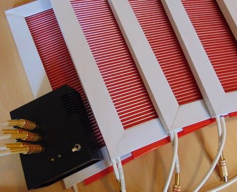
Uređaj je programiran da se posle 45 minuta sam isključi, a ponekad ga možemo isključiti i ranije, ako primetimo da se smanjio broj pčela na sakupljaču. Zatim ploče premeštamo na druge košnice, i tek posle drugog ili trećeg „tretmana“ menjamo staklene ploče i nastavljamo sa još jednim „tretmanom“.
Najbolje rezultate imamo u jutarnjim časovima, kada su pčele najaktivnije. Tokom dana uradimo 4 „tretmana“ na po 10 košnica odjednom. Prosečna količina pčelinjeg otrova koju na ovaj način dnevno sakupimo iznosi između 5 i 12 grama. Po košnici, odnosno po jednom tretmanu jedne košnice, količina sakupljenog otrova kreće se od 0,1 g do 0,3 g, u zavisnosti od jačine društva.

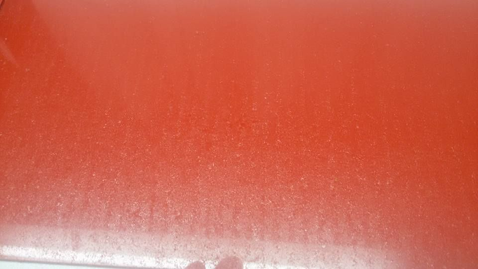
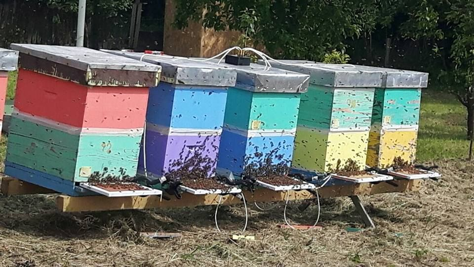
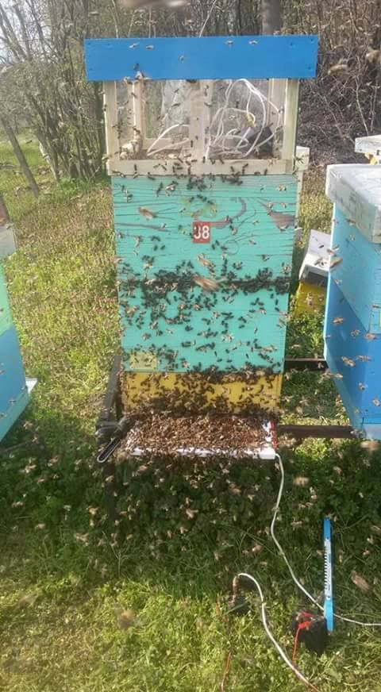
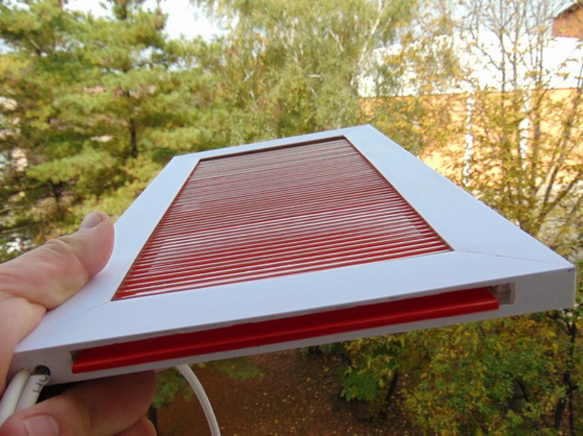


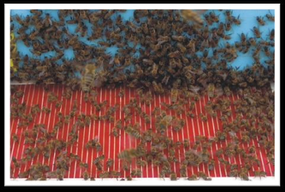
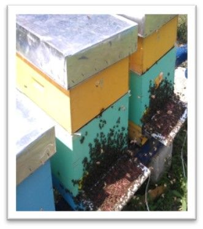
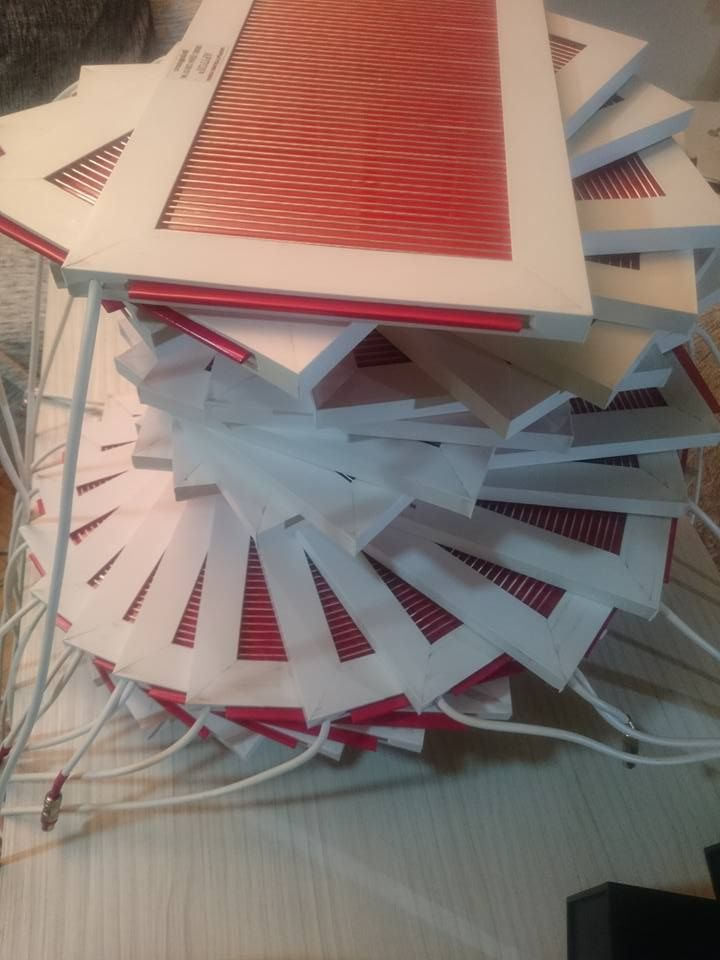
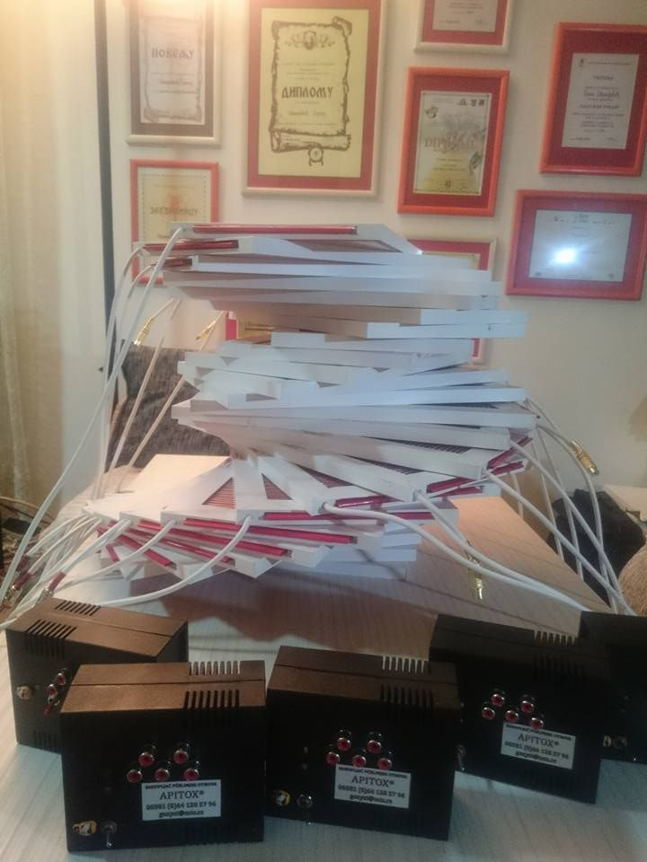


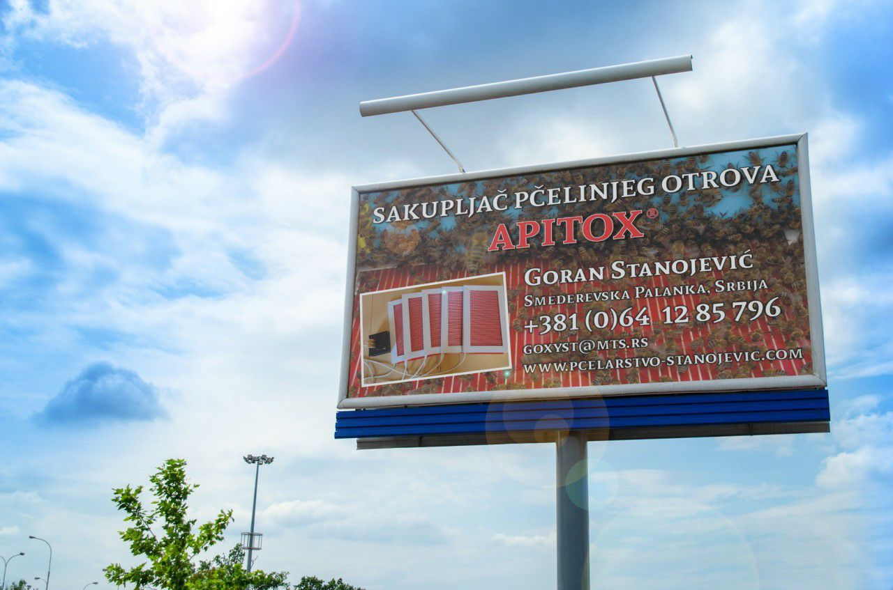
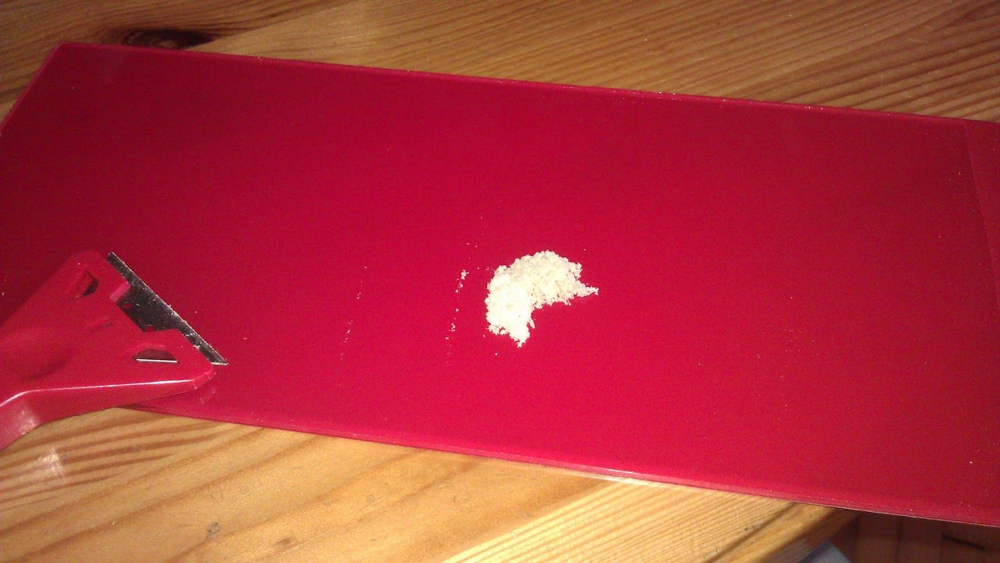
Pozovite nas za ponudu ili dodajte sakupljač u korpu – javićemo vam se.